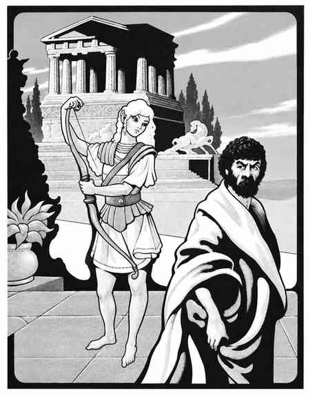

奥林匹斯山 · Olympus
奥林匹斯山是希腊与精灵神话的混沌善良位面。它由三层组成：奥林匹斯山本身、阿卡迪亚山谷与更深的奥林匹斯领域。山脉、海岸、葡萄园和神殿分布在层层叠叠的山坡上，门户通向星界、盖勒斯尼姆和相邻位面。

奥林匹斯山的居民通常是希腊神话、精灵神话中的神祇、半神、天界生物、巨人和英雄。它们常常热情、骄傲、好客而易怒；旅行者若冒犯某位力量，可能被卷入神祇之间的长期争斗。奥林匹斯山的魔法和外层位面规则正常，但有关神祇领域的召唤、愿望和预言会受到对应力量的控制。